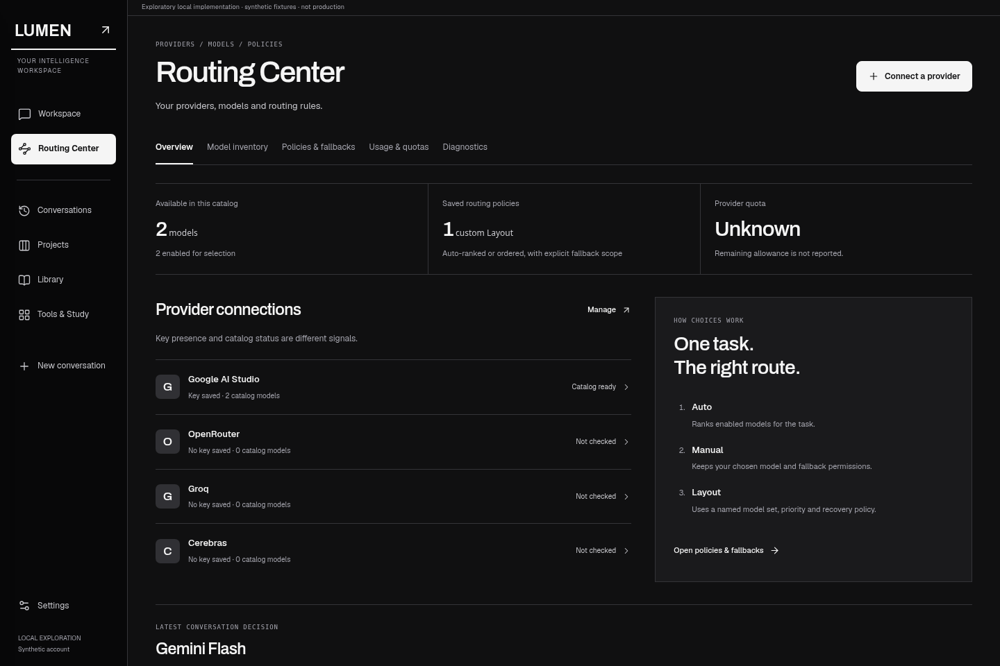
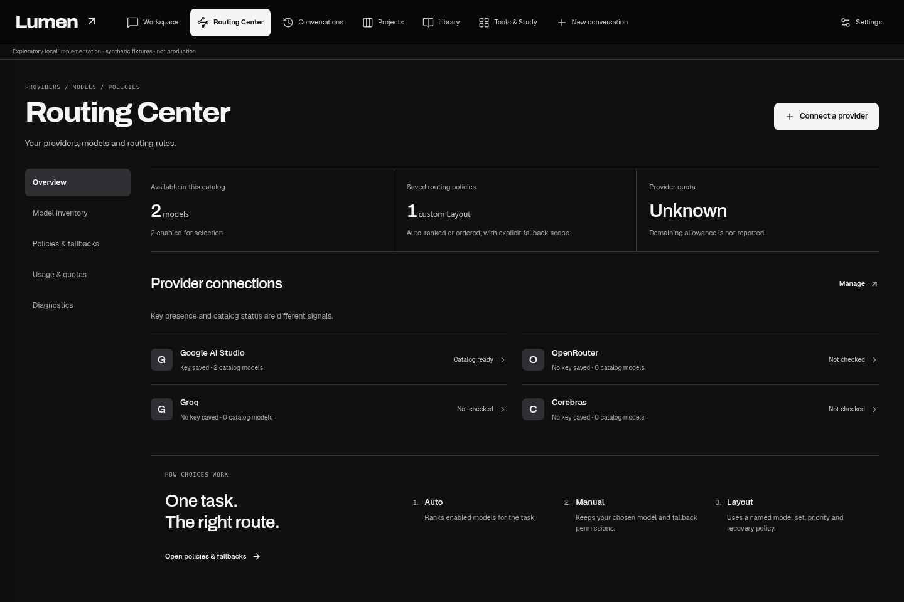
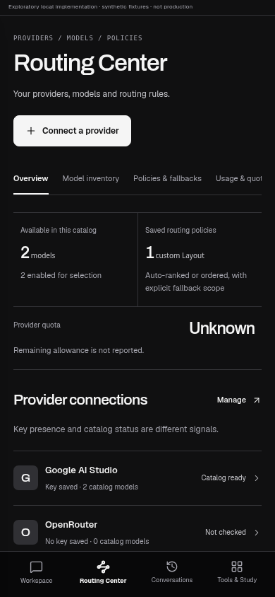
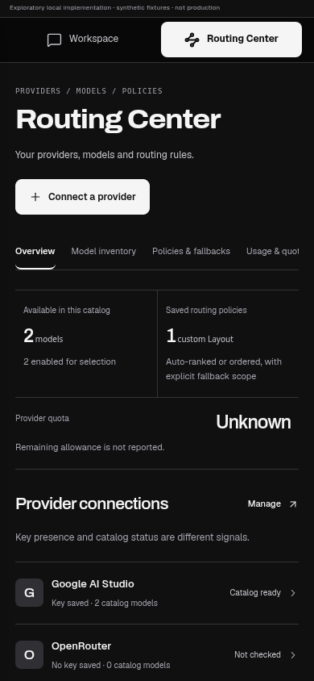

Reading desk + intelligence margin
Index
A horizontal section strip, provider ledger and policy side panel put management beside the active work.

Inspect desktop + iPhone evidence ↓Two meaningfully different local implementations connect the AI Workspace with a first-class Routing Center. The real composer, model picker, usage panel, Layout editor and provider controls drive the interactions. Seeded values are synthetic; these screenshots do not prove live provider access.
Latest provider intelligence review — portable file with eight embedded screenshots
The broader captures below preserve the earlier architectural checkpoint. Provider browsing/detail now supersedes its four-provider overview; use the latest review for this slice.
Original dimensions: desktop 1440 × 960; phone 390 × 844. Click a large image for the full-resolution original. For Routing Center, the baseline is the existing API-key management surface; Lumen currently has no equivalent first-class Routing Center.
A horizontal section strip, provider ledger and policy side panel put management beside the active work.

Inspect desktop + iPhone evidence ↓A persistent section index and grouped provider inventory use the same wider working plane.

Inspect desktop + iPhone evidence ↓A compact workspace index connects conversation and management. The answer has an editorial sequence; route, context and usage stay inspectable in a dedicated margin. On phone, primary workspaces use bottom navigation.

Phone viewport · actual local render
Upper attachment/search/research context controls; expanded input; real Auto/manual/Layout selection; context/usage inspection; provider settings; editing and saving fallback order/permissions; navigation back to the preserved draft and route. A deliberately intercepted send exercises real Stop behavior.
Needs a stronger original final mark, refined provider-detail composition and the complete motion language. Canonical provider/usage/editor surfaces remain partly inherited. Motion, complete account/error workflows and physical iPhone keyboard acceptance are not finished.
A full-height drafting station lives beside the conversation under horizontal product navigation. Long prompts get deliberate working space. On phone, expanded writing becomes its own composing state with a top workspace switch.

Phone viewport · actual local render
Upper attachment/search/research context controls; expanded input; real Auto/manual/Layout selection; context/usage inspection; provider settings; editing and saving fallback order/permissions; navigation back to the preserved draft and route. A deliberately intercepted send exercises real Stop behavior.
The writing station needs further optical refinement and physical iPhone keyboard review. The brand treatment remains exploratory. Canonical provider/usage/editor surfaces remain partly inherited. Motion, complete account/error workflows and physical iPhone keyboard acceptance are not finished.